Вітальня · журнал «ДентАрт» 2018 №2
Хрвоє Старчевич: «Найважливіше у стоматології – зробити так, щоб пацієнти були щасливими»
Інтерв'ю з доктором Хрвоє Старчевичем,засновником і президентом Хорватської академії естетичної стоматологічної медицини. Розмовляла Ганна Антипович
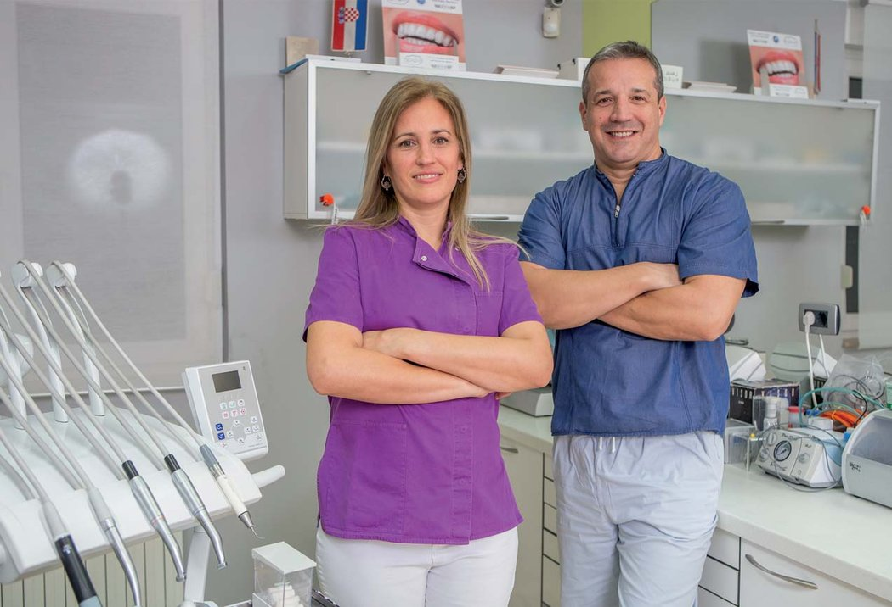
Сьогодні у Вітальні «ДентАрта» – доктор Хрвоє Старчевич, засновник і президент Хорватської академії естетичної стоматологічної медицини, організатор конгресів стоматологів у Корчулі й Задарі, член ITI – Інтернаціональної команди імплантологів, World implant leading center – Міжнародного центру сучасної імплантології, редактор журналу Stomatologiczny-Poland. Колеги з багатьох країн знають доктора Старчевича як талановитого лектора і автора цікавих статей у багатьох стоматологічних виданнях. Він представник молодого покоління стоматологів, яке прагне впровадження у стоматологічну практику найсучасніших методів і матеріалів…
– Шановний пане Старчевичу, раді вітати Вас у Вітальні міжнародного журналу «ДентАрт»! Хорватія, Lijepa Vasa Domovina, як і Україна, відновила свою державну незалежність у 1991 році. Ми бачимо, що за роки незалежності українська стоматологія стала самодостатньою, розвивається дуже динамічно, з'явилися оригінальні школи, методики, нові технології. А які тенденції розвитку стоматології у вашій країні?
– По-перше, я дуже гордий тим, що можу дати інтерв'ю для такого професійного стоматологічного журналу в Україні, як «ДентАрт».
Хорватія і Україна мають багато спільних моментів: схожі мови, хоча писемність і різна, доброзичливі люди, здобута 1991 року незалежність; хорвати й українці входили до племінного союзу антів у ІV-VII століттях, а потім разом з частиною українського народу ми були у складі Австро-Угорської імперії і мріяли про відновлення незалежності наших держав, боролися за неї все ХХ століття...
Якщо говорити про сучасну стоматологію, то в наших країнах відбуваються аналогічні процеси: швидке впровадження нових технологій і матеріалів, удосконалення стоматологічної освіти. Коли я навчався, у Хорватії було два стоматологічних університети, один у Загребі, студентом якого я був, а другий у Рієці (місто за 150 км від Загреба до моря). Відмінності між ними полягали в тому, що у Загребі була Школа стоматології, а в Рієці відділення стоматології було і досі є частиною медичного факультету університету. Нині в Хорватії у нас також є Школа стоматології у Спліті, Осієку і частина в Загребі, де викладають англійською мовою. Якщо ви хочете вчитися в Осієку та англійському відділенні в Загребі, повинні платити 10000 євро на рік. Але все ще найцінніший диплом – Загребського університету.
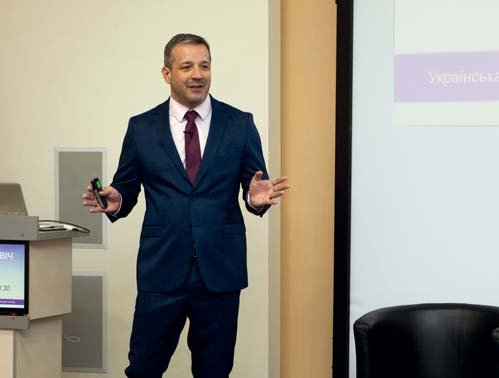
Виступ з лекцією в Індонезії, 2009 рік.
Хорватська Стоматологічна Палата (Hrvatska komora dentalne medicine) була заснована 1996 року, і відтоді вона контролює освіту всіх стоматологів, які закінчили університет. Щороку хорватському стоматологові треба збирати 10 балів на конгресі або практикувати, щоб продовжити ліцензію. Це дуже ефективний спосіб змусити стоматолога продовжити післядипломну освіту, що особливо важливо сьогодні, коли обсяг потрібних знань швидко розширюється, і якщо ви хочете бути в курсі всіх нових речей у стоматології, ви повинні бути онлайн 24/7. Університет, Палата, академії та дилерські установи відповідають за це у Хорватії.
– Ви засновник і президент Хорватської академії естетичної стоматологічної медицини. Як виникла ідея створення академії, що цікавого і важливого в її діяльності сьогодні? І чому медицини?
– Мені подобалося фотографувати мої роботи, аналізувати досвід колег, і я мав організаційний досвід (концерти, спортивні ігри та багато іншого, що я робив у своєму житті). Ivoclar попросив мене зробити лекцію для них, і мій друг Денис Каштелян запитав мене 2005 року під час першого Конгресу з імплантології, невже ми удвох не зможемо організувати щось подібне в Корчулі, де він мешкає і працює стоматологом. Денис сказав, що я відповідаю за стоматологію, а він організує готель і зал для Конгресу. І так усе почалося у 2006 році.
Корчула – маленьке містечко на однойменному острові, місце дивовижне, але трохи віддалене від аеропортів, великих міст. На першому Конгресі було 72 учасники, але у нас була гарна програма з Галіпом Гюрелем, Ріком Ван Нортом і хорватськими доповідачами. Відбувся ще один конгрес у Корчулі 2009 року, а потім я вирішив перемістити конгрес у Задар через краще транспортне сполучення і більші можливості.
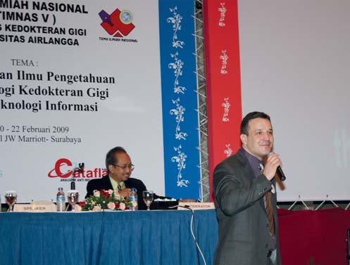
Презентація в Україні на конгресі Української академії естетичної стоматології, 2017 рік.
У 2010 році я почав відвідувати конгреси EAED (Європейської академії естетичної стоматології), де побачив, як може працювати одна чудова Академія. Тому 2012 року я вирішив заснувати Хорватську академію естетичної стоматологічної медицини (Hrvatsko drustvo estetske dentalne medicine). У Хорватії офіційна назва стоматології – «стоматологічна медицина», тому я просто переклав термін англійською мовою. Сьогодні бачу, що CAAD буде краще, але для цього потрібно змінити наш статут, що ми і будемо робити якомога швидше. Академія зростає з кожним роком, на конгресі завжди присутні ще на 10-15 осіб більше, і мої наміри щодо Академії – залучити молодих стоматологів і через 4-5 років залишити керівництво Академії їм, як це зробив Сергій Радлінський в Україні.
– На Генеральній асамблеї Міжнародної федерації естетичної стоматології, на інших міжнародних форумах стоматологів Ви часто в центрі уваги, бо активно дискутуєте з колегами, вносите пропозиції щодо активізації роботи наших професійних об'єднань. Що Ви пропонуєте для вдосконалення діяльності IFED?
– Існує ще один зв'язок між Українською і Хорватською академіями – ми стали частиною IFED (Міжнародної федерації естетичної стоматології) у 2014 році на Генеральній асамблеї в Чикаго. На той момент я шукав IFED як вершину всіх стоматологічних академій. Але з часом бачиш не лише позитивні моменти в її діяльності, а й те, що варто було б спробувати змінити. Що мені не подобається в IFED, так це те, що щороку йде мова про внесок у сумі 750 доларів США, про те, чи кожен повинен платити за такою ціною. Але немає великих і маленьких академій!!!
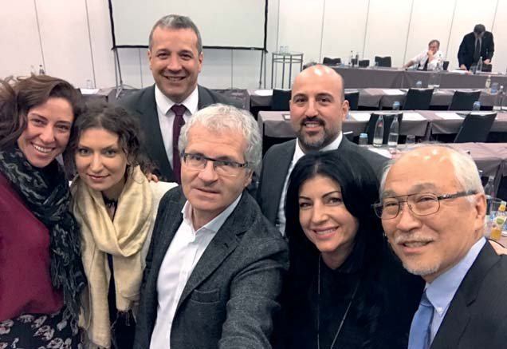
Під час Генеральної асамблеї Міжнародної федерації естетичної стоматології в Кельні, 2017 рік.
Спочатку, оскільки я був новачком, я був спокійний, але коли побачив, що ці дискусії повторюються щороку, я почав говорити. Не люблю бути в центрі уваги, але якщо мені є що сказати, я скажу це. Моя думка полягає в тому, що IFED має бути сполучною ланкою між академіями і що на конгресах IFED повинні бути лектори з усіх академій, щоб ми могли ділитися знаннями і дискутувати (наприклад, як ми робили в Полтаві, як я робив з Турецькою академією і т.д.). Якщо хтось не платить за членство, він не може бути частиною Міжнародної федерації, інакше ми перестанемо платити і все ще будемо членами IFED...
– Що Ви вважаєте найважливішим для успішного професійного зростання молодих стоматологів?
– Найважливіше для молодого стоматолога – наявність гарного наставника, який керуватиме ним як досвідчений професіонал і як друг. Ми, коли були молодші, думали, що можемо змінити світ і що ми знаємо все, але багато разів я говорив: «Мені буде подобатися те, що у мене був досвід молодості і ті роки».
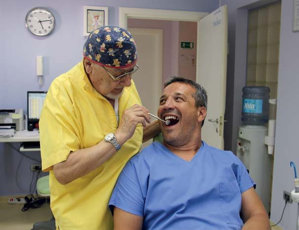
Помінятися місцем з пацієнтом – один зі способів зняти у нього напругу.
– Що надихнуло Вас обрати нелегку професію стоматолога? Розкажіть про етапи Вашого професійного становлення.
– У нашому житті у нас є бажання і можливості. Якщо ви хочете чогось дуже сильно, майже завжди ви зможете це зробити. Спочатку моєю мрією було стати архітектором, але поскільки моя мати була ортодонтом і я виріс у стоматологічній практиці, мій вибір змінився. Я вирішив продовжити справу моєї мами, особливо утвердився у своєму рішенні того дня, коли вона померла. У той час я був новачком і лише починав шлях. Шлях продовжився, потім півроку в боях (на четвертому році навчання в університеті), і закінчив я університет у десятці кращих у моєму поколінні. Мені було 24 з половиною роки.
Після цього я провів один рік інтерном, а потім почав шукати роботу стоматолога в державній установі. Тим часом продавав стоматологічні матеріали, зубні щітки, щоб вижити, тому що в той час я одружився і народився мій старший син Лука. 1 січня 1997 року я нарешті отримав роботу не як підмінний працівник. Оскільки моя дружина теж мала стоматологічну освіту, у 2006 році ми вирішили просунутися вперед і відкрити приватну практику в Загребі. Тепер ми маємо намір розширити нашу клініку, але це поки що плани. У моєї дочки Лори є інтерес продовжувати нашу роботу, і це стимул іти далі вперед.
– Ви читаєте лекції з імплантології, у Вас великий досвід у цій галузі. Коли йдеться про системну профілактику стоматологічних захворювань, про те, що стоматологія повинна бути такою, щоб зуби пацієнтам видаляти не доводилося, ми говоримо: було б непогано залишити імплантологів без роботи... Наскільки далекою бачиться Вам така перспектива?
– Я читаю лекції про естетичну стоматологію і повну реабілітацію ротової порожнини, і імплантологія – це лише частина того, що ви повинні зробити. Для мене найважливіше у стоматології – зробити так, щоб пацієнти були щасливими і задоволеними. Тому, коли я починаю реабілітацію ротової порожнини, першим кроком є стоматологічна гігієна і процедури, які очищають від зубного каменю, щоб запобігти періодонтальним захворюванням. Ви не можете робити гарну роботу з протезування чи імплантації, якщо не вирішили періодонтальні проблеми. Потім слід подбати про оклюзію, і лише після цього йде естетика. Так що імплантології – так, але тільки тоді, коли це потрібно.
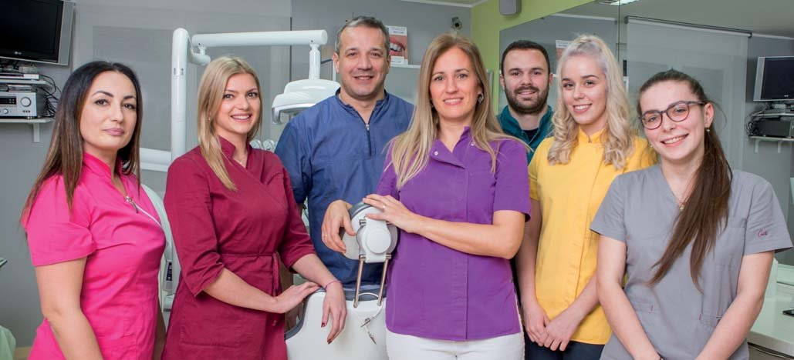
Хрвоє Старчевич з донькою Лорою на конгресі Американської академії естетичної стоматології у Сан-Дієго (Каліфорнія, США), де він був удостоєний нагороди за доповідь. 2017 рік.
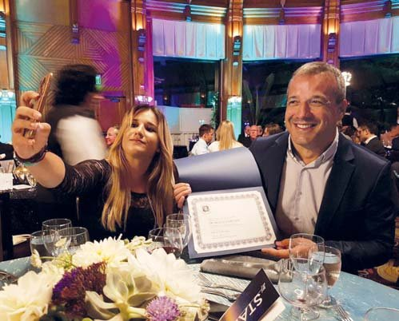
Команда Хрвоє і Даніели Старчевичів.
– Стоматологія – стресгенеруюча професія. Ваше захоплення альпінізмом, велоспортом і лижами – це зняття стресу чи ще один спосіб самоствердження як особистості?
– У суботу в Задарі ми будемо читати лекції про стрес у стоматології, тому що кажуть, що стоматологія – одна із стресгенеруючих професій. Навіть у фільмі «Дев'ять ярдів» з Метью Перрі і Брюсом Віллісом вони сказали, що стоматологія – найбільш самогубна професія, і це було в Канаді. Напружене положення тіла, можливість зараження від пацієнтів, а також те, що ми повинні бути психологами одночасно, роблять нашу роботу небезпечною і стресовою.
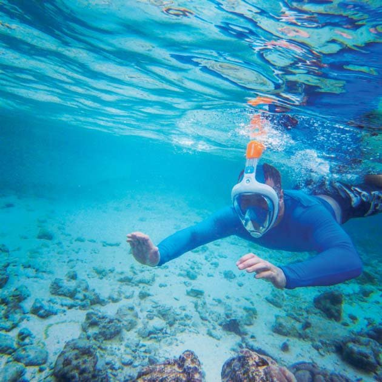
Базовий табір 5360 метрів у Гімалаях.
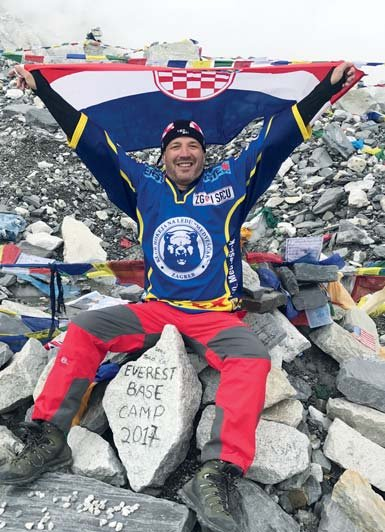
Дайвінг на Мальдівах.
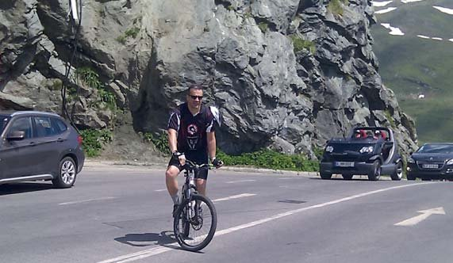
На Гроссглокнері з велосипедом.
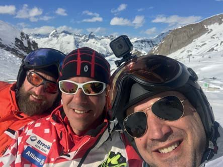
Катання на лижах з друзями також добре знімає напругу стоматологічних буднів.
Саме через це я шукаю способів час від часу тікати від стоматологічної реальності, і коли я не в практиці і не на конгресі, маю інші захоплення. На першому плані, звичайно, моя родина – дружина Даніела, діти Лука і Лора, а потім – спортивні вправи: сходження на гірські вершини, катання на лижах, їзда на велосипеді, а раніше – командні види спорту, такі як баскетбол, яким я захоплювався до університету, футбол і волейбол.
Улітку я люблю серфити і плавати по нашому прекрасному морю, де у нас є будинок, тому що моя дружина звідти (Задар – Сукошан). Кілька років тому я не думав про те, щоб зійти на вершину деяких гір, але Стіпе Божич став моїм пацієнтом, а два сходження на Еверест і підкорені вершини на кожному континенті роблять його ідеальним гуру, і він значною мірою вплинув на те, що я був на Триглаві (найвища вершина колишньої Югославії і Юлійських Альп, 2864 метри), Монте Розі (4559 метрів) і в Базовому таборі на Евересті (5360 метрів). Що далі, я не знаю, може, Мак-Кінлі, можливо, Кіліманджаро в Африці, але найголовніше – бути здоровим і в гарному настрої. У той же час і в Хорватії є багато красивих гір, куди я можу йти пішки або підніматися на гірському велосипеді.
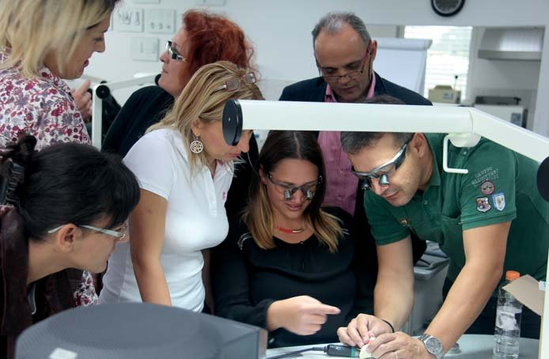
Навчаючи інших, і сам опановуєш нові вершини майстерності.
– Хорвати п'ять років боролися, відстоюючи інтереси своєї держави, за її цілісність і свободу віддали своє життя тисячі синів і дочок нації. Сьогодні Україна в такому ж становищі, як ви у 1991-1995 роках. Що найважливіше для того, щоб нація вистояла, як це зробив ваш народ, коли Вуковар із символу поразки перетворив на символ перемоги?
– Ми знаємо, що було в Хорватії у 1991-1995 роках і що зараз в Україні. Я провів шість місяців у боях у 1991 році, я гордий бути учасником боротьби за Хорватію, але мені тяжко говорити про ті роки, мені жаль кожну людину, убиту в будь-якій війні на будь-якій стороні. На жаль, політика і імперські інтереси постійно кидають народи в пекло військових конфліктів, а я проти силових вирішень проблем. Адже ніщо не врятує людей...
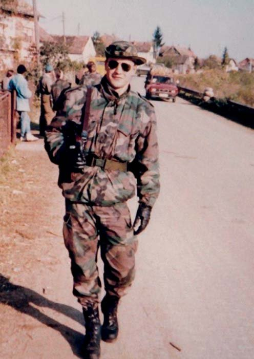
Хрвоє Старчевич на лінії фронту в 1991 році, коли Хорватія відстоювала свою незалежність.
– Ваші побажання колегам, які читатимуть цей журнал.
– Під час виступів у Полтаві я почув багато цікавих лекцій колег з України, і я можу побажати всім вам просто продовжувати свою роботу і пишатися тим, що ви робите, тому що у вас є багато чого показати. Сподіваюся, що і в майбутньому буде багато моментів, коли ми ділитимемося досвідом.
– Дякуємо за інтерв'ю! А наше дентартівське побажання Вам і народові Хорватії мовимо словами Тараса Шевченка: «Щоб усі слов'яни стали добрими братами і синами сонця правди...», а також рядками хорватського поета Людевіта Гая у перекладі українського поета Дмитра Павличка:
Neka zive nasa sloga, vsaki pravi Slav,
Pravi sinko roda svoga neka bude zdrav!
Хай панує наша згода, єдність і любов,
Кожен син свого народу хай буде здоров!
Розмовляла Ганна Антипович
Фото з архіву Хрвоє Старчевича